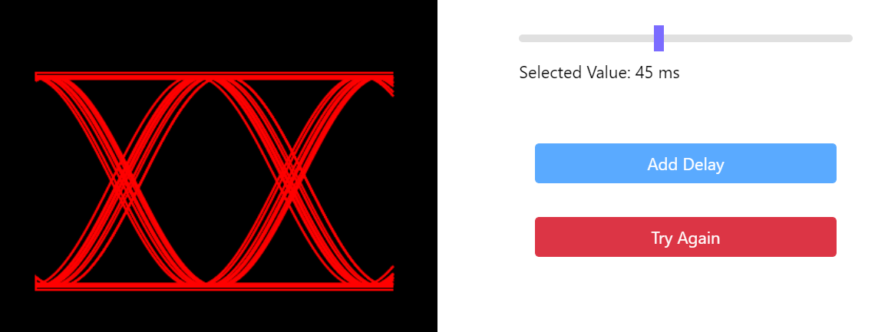
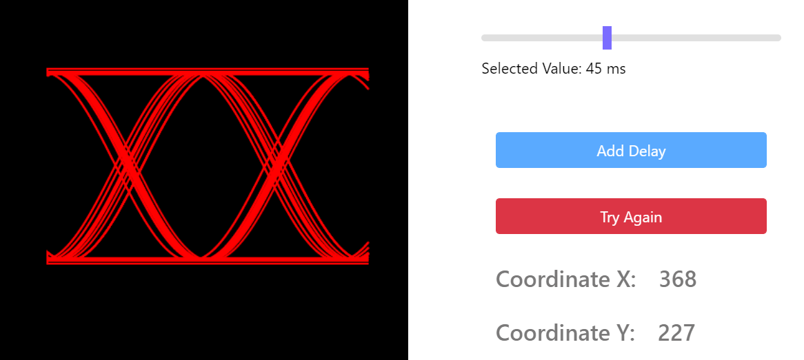
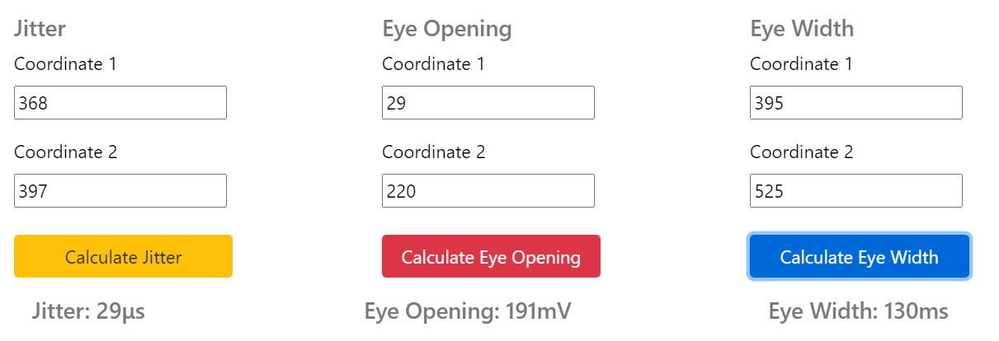
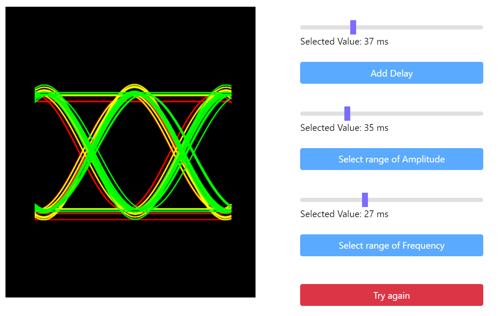

Understanding Eye Diagram
Procedure for Simulation
- The simulation page consists of 4 sections where you can vary different parameters such as Delay, Amplitude and Frequency. Navigate through the pages using carousel buttons. The steps of execution are the same for first three sections and different for the last section.
- For the first three sections, select the range of variation of the parameter using the given slider and click on 'Add' to observe the waveform formation on the screen. Wait for 5 seconds to observe the complete formation.
- To change the value for the selected parameter, click on 'Try Again' and select the value on the slider again.
- Clicking on the screen will display the coordinates of the clicked point. To measure the parameters, enter the required coordinate of the two points whose distance is to be measured.
- After entering the coordinates, click on 'Calculate' to get the result. If the result is shown incorrect, click on Try again and repeat steps 2 and 4 with your desired value of Delay/ Amplitude/ Frequency. If the result is correct, it is displayed on the screen.
- Click on 'Next' to move to the next section.
- For the last section, select the range of variation of Delay using the given slider and click on 'Add Delay'. The delay added waveform will be shown on the screen. Similarly select range of values for Amplitude and Frequency. Clicking on 'Add Amplitude' and 'Add Frequency'.
- Repeat steps 4 and 5 to get the value of parameters.
- Click on 'Attempt Post Test' to proceed further.

Slider selection for parameter variation

Enter coordinates to measure parameters

Calculation results display

All parameters variation interface
Procedure for Pre-Test
- Select the correct labeling for the given Eye-diagram from the dropdown of each label.
- You would be able to proceed ahead only after labeling the diagram correctly.
- Click 'Next' to answer the Multiple Choice Questions.
- Click on 'Check answers' to evaluate your score. 'View Answers' can be used to access the solutions.
- Clicking on the 'Download' button downloads documents containing your responses for each attempt.
- Proceed to Simulation tab using 'Perform Simulation' button.